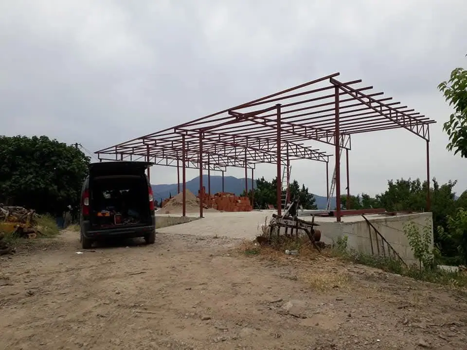

Dikili'de sundurma ve pergola
Dikili, kıyı turizmi ve yazlık yerleşimlerinin yanında jeotermal kaynaklara dayalı sera yatırımları ve tarımsal üretimiyle öne çıkan, İzmir'in kuzey kıyısındaki bir ilçedir.
Müstakil evlerde teras ve bahçe oturma alanları için çelik sundurma, yaz aylarında gölge, kışın ise yağmurdan korunan kullanışlı bir alan sağlar.
Dikili, Aliağa ve Bergama hattı üzerinden ulaşılan kuzey ilçelerimizdendir; keşifler bu bölgeye yönelik planlama içinde yapılır.

Sunulan uygulamalar
- Teras ve balkon üstü çelik sundurmalar
- Bahçe pergolaları
- Giriş saçakları ve kapı üstü sundurmalar
- İş yeri ve tarım sundurmaları
- Sac, panel, polikarbonat veya cam örtü seçenekleri
Dikili için uygulama senaryoları
Yazlık evlerde deniz tarafındaki teraslara yapılan sundurmalarda güçlü rüzgârlara karşı sağlam ankraj ve tuzlu havaya dayanıklı yüzey koruması gerekir.
Kafe, restoran ve pansiyon bahçelerinde pergola ve sundurmalar, oturma kapasitesini mevsimden bağımsız kullanılabilir hâle getirir.
Tarım arazilerinde traktör, ekipman ve ürünleri güneşten ve yağmurdan korumak için açık yan cepheli sac çatılı sundurmalar yaygın olarak kullanılır.
Keşif talepleri ilçe merkezi, Çandarlı, Bademli, Kabakum dahil Dikili genelinden alınır.
Kullanılan malzeme ve üretim süreci
- Kutu profil ve gerektiğinde kafes kiriş taşıyıcılar
- Trapez sac, sandviç panel veya polikarbonat örtü
- Oluk ve iniş borusu detayları
- Astar ve son kat boya
Dikili koşulları: Kıyı şeridinde tuzlu hava ve rüzgâr, sera alanlarında ise yüksek iç nem metal konstrüksiyonda galvaniz ve iyi yüzey korumasını gerektirir.
Uygulama alanları
- Müstakil ev terasları
- Bahçe oturma alanları
- Kafe ve restoran bahçeleri
- Fabrika ve depo yükleme alanları
- Tarım ekipmanı ve ürün koruma alanları
İlgili çalışmalar



Görseller farklı lokasyonlardaki çalışmalarımızdan örneklerdir.
Neden sundurma ve pergola?
- Yaz ve kış kullanılabilen yarı açık alan
- İnce kesitli, geniş açıklıklı taşıyıcı
- Farklı örtü seçenekleri
- Ahşaba göre düşük bakım ihtiyacı
Keşif ve fiyatlandırma nasıl ilerler?
İletişim
WhatsApp veya telefonla işinizi kısaca anlatın; varsa fotoğraf ve yaklaşık ölçüleri paylaşın.
Keşif ve ölçü
Gerekli işlerde yerinde keşif yapılır, kesin ölçüler alınır ve saha koşulları incelenir.
Projeye özel teklif
Malzeme, yüzey koruma ve montaj kapsamı netleştirilerek teklif hazırlanır.
İmalat
Onay sonrası parçalar ölçüye göre kesilir, kaynaklanır, temizlenir ve boyanır.
Montaj ve teslim
Sahada montaj yapılır, son kontroller tamamlanarak iş teslim edilir.
Sık sorulan sorular
Dikili'de sundurma ve pergola için keşfe geliyor musunuz?
Evet, Dikili dahil İzmir'in tüm ilçelerinden keşif talebi alıyoruz. Dikili, Aliağa ve Bergama hattı üzerinden ulaşılan kuzey ilçelerimizdendir; keşifler bu bölgeye yönelik planlama içinde yapılır. Keşiften önce iş yerinin fotoğraflarını ve yaklaşık ölçülerini WhatsApp'tan göndermeniz ön değerlendirmeyi hızlandırır.
Dikili koşullarında sundurma ve pergola için nelere dikkat edilmeli?
Kıyı şeridinde tuzlu hava ve rüzgâr, sera alanlarında ise yüksek iç nem metal konstrüksiyonda galvaniz ve iyi yüzey korumasını gerektirir. Malzeme, profil ve yüzey koruma seçenekleri keşifte bu koşullara göre önerilir.
Dikili'de sundurma ve pergola fiyatı nasıl belirlenir?
Fiyat; işin ölçüsü, kullanılacak malzeme ve profil kalınlığı, yüzey koruma tipi ve montaj koşullarına göre belirlenir. Dikili için ulaşım ve saha koşulları da keşifte değerlendirilir; sabit liste fiyatı yerine projeye özel teklif verilir.
Sundurma için izin gerekir mi?
Sundurmanın büyüklüğü, konumu ve kalıcılığına göre belediye izni gerekebilir; apartmanlarda kat malikleri kararı da istenebilir. Başlamadan önce durumu teyit etmeniz önerilir.
Sundurmada hangi örtüyü seçmeliyim?
Işık geçirmesi istenen alanlarda polikarbonat, ısı ve ses yalıtımı istenen alanlarda sandviç panel, ekonomik ve pratik çözüm için trapez sac tercih edilir.
İlgili ilçeler
- Bergama Sundurma ve Pergola
- Aliağa Sundurma ve Pergola
- Kınık Sundurma ve Pergola
- İzmir geneli Sundurma ve Pergola